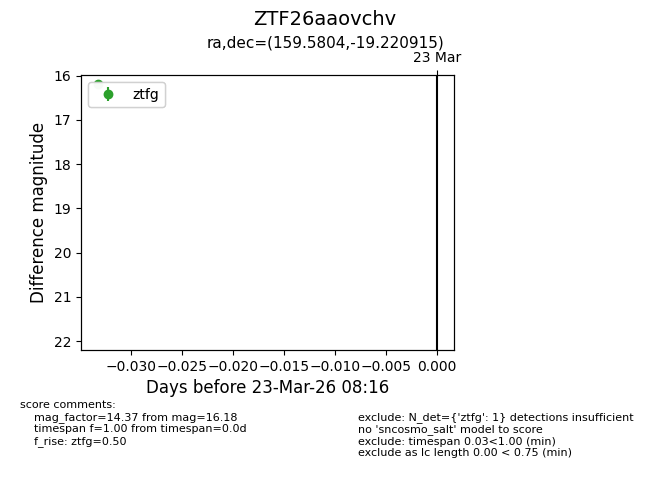
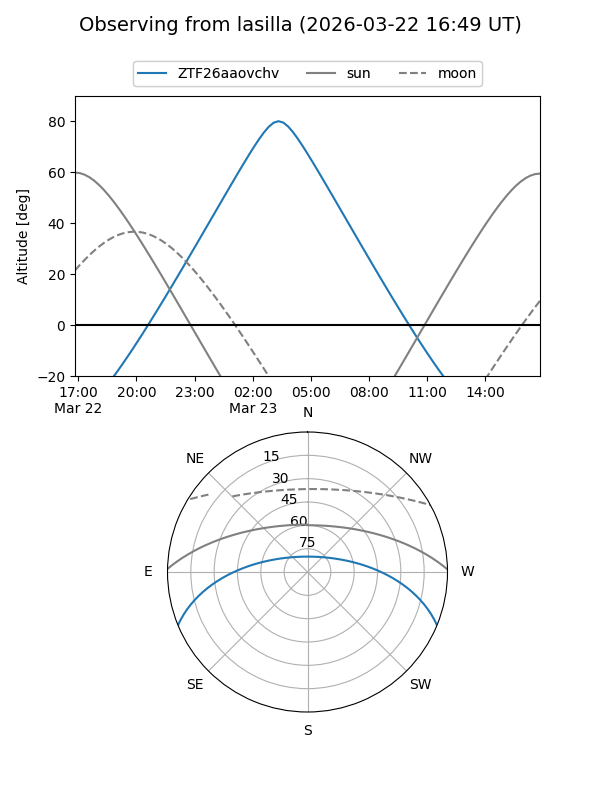
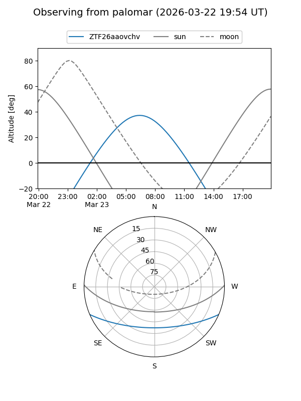

ZTF26aaovchv
Target ZTF26aaovchv at 2026-03-23 08:18
Aliases and brokers:
FINK: link
Lasair: link
ALeRCE: link
alt names
ZTF26aaovchv (ztf,fink_ztf)
Coordinates:
equatorial (ra, dec) = 159.5804,-19.22092
equatorial (HMS+DMS) = 10:38:19.31,-19:13:15.29
galactic (l, b) = (264.4992,+33.53504)
Flags:
Photometry:
last ztfg=16.18
1 ztfg detections
Lightcurve

Visibility


Additional plots